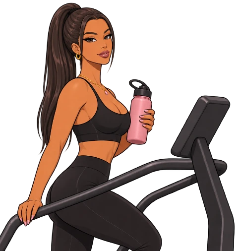

<!doctype html><html lang="nl"><meta charset="utf-8"><meta name="viewport" content="width=device-width,initial-scale=1"><title>Beweging · faseschets</title>
<style>
*{box-sizing:border-box}body{margin:0;font:15px/1.5 "DM Sans",system-ui,sans-serif;color:#302a34}main{max-width:430px;margin:auto;padding:18px;background:var(--wash);border-radius:24px}header,.controls,.bar{display:flex;align-items:center;justify-content:space-between;gap:8px}header h1{margin:0;font-size:26px;letter-spacing:-1.2px}select,button{font:inherit;cursor:pointer}select{border:1px solid #d9d2da;background:white;color:var(--ink);border-radius:16px;padding:8px;font-size:13px;font-weight:650}header label{font-size:12px;color:var(--ink)}.hero{background:var(--ink);border-radius:24px;padding:20px;color:white;position:relative;overflow:hidden;margin:14px 0 22px}.hero h2{color:white;font-size:27px;line-height:1.1;letter-spacing:-.9px;max-width:78%;margin:6px 0 10px}.hero p{position:relative;margin:0;max-width:82%;font-size:13px;color:white}.hero small{color:white}.hero img{position:absolute;right:0;bottom:0;width:43%;height:97%;object-fit:contain;object-position:bottom right;pointer-events:none}.hero{padding-right:43%;min-height:166px}.hero h2,.hero p{max-width:none}h2{font-size:20px;line-height:1.2;letter-spacing:-.6px;margin:22px 0 10px}.panel{background:white;border-radius:20px;padding:0 16px}.panel details+details{border-top:1px solid #eee9ef}summary{cursor:pointer;min-height:51px;display:flex;align-items:center;justify-content:space-between;font-weight:680;list-style:none}summary::-webkit-details-marker{display:none}summary:after{content:'+';color:var(--ink)}details[open]>summary:after{content:'−'}.panel p{margin:0;font-size:14px}.examples{display:block;color:var(--ink);font-size:13px;margin:7px 0}.controls button,.bar button{min-height:40px;border:0;border-radius:12px;font-weight:650;color:var(--ink);background:var(--soft);padding:7px 12px}.panel details[open]{padding-bottom:10px}.session{background:white;border-radius:20px;padding:16px}.goal{display:flex;align-items:center;justify-content:space-between;gap:8px;font-size:13px}.session fieldset{border:0;padding:0;margin:14px 0}.session legend{font-weight:600;font-size:13px;margin-bottom:6px}.controls button,.bar button{flex:1}.controls [aria-pressed=true],.bar [aria-pressed=true]{background:var(--ink);color:white}.plan{border-top:1px solid var(--soft);padding-top:13px}.plan small{color:var(--ink);font-weight:700}.plan h3{margin:4px 0;font-size:20px}.plan p{margin:0;font-size:14px}.log{margin:20px 0 0}.bar button{background:white}.log output{font-size:13px;color:var(--ink);display:block;margin-top:6px}button:focus-visible,summary:focus-visible,select:focus-visible{outline:3px solid var(--ink);outline-offset:2px}
</style><main><header><h1>Beweging</h1><label>Fase <select id="phase"><option value="menstrual">Menstruatie</option><option value="follicular">Folliculair</option><option value="ovulatory">Ovulatie</option><option selected value="luteal">Luteaal</option></select></label></header>
<section class="hero"><small id="label"></small><h2 id="title"></h2><p id="intro"></p></section>
<h2>Bewegen in deze fase</h2><section class="panel" id="forms"></section>
<h2 id="today">Wat past vandaag?</h2><section class="session"><label class="goal">Mijn doel <select id="goal"><option value="gain">Spiermassa opbouwen</option><option value="maintain">Gewicht behouden</option><option value="lose">Afvallen</option><option value="recomp">Afvallen en spieropbouw</option></select></label>
<fieldset><legend>Hoeveel energie heb je?</legend><div class="controls" id="energy"><button>Weinig</button><button>Gemiddeld</button><button>Veel</button></div></fieldset><div class="plan" aria-live="polite"><small id="meta"></small><h3 id="session"></h3><p id="cue"></p></div></section>
<section class="log"><h2>Jouw kalender</h2><div class="bar" id="log"><button aria-pressed="false">Vandaag bewogen</button><button aria-pressed="false">Rustdag</button></div><output id="status"></output></section></main>
<script>
const phases={
 menstrual:['Menstruatie','Kies je tempo bij de start.','Heb je kramp, kies dan iets wat je makkelijk kunt inkorten. Voel je je goed? Je vertrouwde training kan ook.','#A93660','#FFF4F7','rgba(255, 92, 138, 0.14)',['mobility','walk','strength']],
 follicular:['Folliculaire fase','Vind je ritme weer.','Na je menstruatie stijgt je oestrogeen meestal richting de eisprong. Een bekende oefening helpt je voelen welke belasting vandaag past.','#396789','#F3F8FC','rgba(127, 180, 217, 0.14)',['strength','cardio','dance']],
 ovulatory:['Ovulatiefase','Waar heb je zin in?','Veel vrouwen merken weinig van de eisprong. Kies een activiteit die je leuk vindt en gebruik je warming-up om je tempo te vinden.','#80457F','#FAF4FB','rgba(197, 138, 198, 0.14)',['dance','strength','walk']],
 luteal:['Luteale fase','Houd je eigen ritme.','Voor je menstruatie kun je sneller moe zijn. Een vertrouwde sessie kan dan fijn voelen. Heb je veel energie? Ga gerust voor je gewone training.','#5C4F90','#F6F4FC','rgba(157, 146, 212, 0.14)',['pilates','cardio','strength']]
};
const forms={
 strength:['Vertrouwde krachttraining','Kies bekende oefeningen. Zo voel je tijdens je eerste set of je het gewicht of het aantal sets wilt aanpassen.','Squat · Roeibeweging · Heupbrug', ['8 min','Eén rustige ronde','Begin met rustig lopen. Doe één comfortabele set squats en één set heupbruggen.'],['18 min','Twee vertrouwde oefeningen','Warm rustig op. Doe twee sets van een squat en een roeibeweging met je gebruikelijke weerstand. Rust tussen de sets.'],['30 min','Je gewone krachtsessie','Warm op en volg je vertrouwde schema. Kies het gewicht op basis van je eerste set.']],
 pilates:['Pilates','Een rustige reeks op de mat is fijn als je aandacht wilt geven aan controle en ademhaling.','Bird dog · Bekkenkanteling · Heupbrug',['5 min','Een moment op de mat','Kantel je bekken rustig terwijl je op je rug ligt. Voeg een paar heupbruggen toe.'],['12 min','Een rustige matserie','Wissel bekkenkantelingen en heupbruggen af. Eindig op handen en knieën en strek om beurten één been.'],['20 min','Je favoriete pilatesreeks','Begin met bekkenkantelingen. Bouw op naar bird dogs en heupbruggen en herhaal de reeks op je eigen tempo.']],
 cardio:['Cardio op gelijkmatig tempo','Kies dit als je lekker wilt doorbewegen zonder steeds te versnellen.','Loopband · Stairmaster · Crosstrainer · Hometrainer',['6 min','Rustig op de crosstrainer','Start met weinig weerstand en beweeg een paar minuten op een comfortabel tempo.'],['15 min','Loopband op praattempo','Wandel eerst rustig op de loopband. Kies daarna een tempo of lichte helling waarbij je nog kunt praten.'],['25 min','Een sessie op de stairmaster','Begin op een lage stand. Zoek een gelijkmatig stapritme en schakel terug als je ademhaling te snel gaat.']],
 walk:['Wandelen','Een korte lus maakt het makkelijk om onderweg te kiezen of je verder wilt.','Ommetje · Parkronde · Stevig wandelen',['5 min','Een frisse neus','Loop tot het einde van je straat en terug.'],['15 min','Een rondje dichtbij','Kies een vertrouwde route en loop in een prettig ritme.'],['25 min','Een stevige wandeling','Begin op je gemak. Wandel het middenstuk vlot en eindig rustig.']],
 mobility:['Rustige mobiliteit','Kleine bewegingen kun je makkelijk aanpassen aan wat prettig voelt.','Schouderrollen · Heupcirkels · Rug bewegen',['4 min','Even losmaken','Rol je schouders en draai je heupen in kleine cirkels.'],['8 min','Van schouders tot heupen','Wissel schouderrollen, heupcirkels en rustig buigen en strekken van je rug af.'],['12 min','Een vloeiende reeks','Maak je schouders en heupen los. Herhaal je favoriete bewegingen in een rustig ritme.']],
 dance:['Dans','Met muziek kies je zelf hoe lang en hoe intensief je beweegt.','Vrij dansen · Danspas oefenen · Danswork-out',['4 min','Eén favoriet nummer','Zet een liedje op en stap rustig mee.'],['12 min','Een paar nummers voor jezelf','Begin met een rustig nummer en beweeg daarna mee op je favoriete muziek.'],['20 min','Een korte danssessie','Begin rustig, bouw op met een paar vlotte nummers en eindig met een langzamer lied.']]
};
const $=id=>document.getElementById(id);let level=1;
function plan(){const options=phases[$('phase').value][6],goal=$('goal').value;
const key=(['gain','recomp'].includes(goal)?'strength':options.find(k=>['walk','cardio','dance'].includes(k)));
const [time,title,cue]=forms[key][3+level];$('meta').textContent=forms[key][0]+' · ca. '+time;$('session').textContent=title;$('cue').textContent=cue;
[...$('energy').children].forEach((b,i)=>b.setAttribute('aria-pressed',i===level))}
function draw(){const [label,title,intro,ink,wash,soft,options]=phases[$('phase').value];Object.entries({ink,wash,soft}).forEach(([k,v])=>document.querySelector('main').style.setProperty('--'+k,v));$('label').textContent=label;$('title').textContent=title;$('intro').textContent=intro;
$('forms').replaceChildren(...options.map(k=>{const [name,why,examples]=forms[k];const d=document.createElement('details');d.name='movement';d.innerHTML='<summary>'+name+'</summary><p>'+why+'</p><strong class="examples">'+examples+'</strong>';return d}));plan()}
$('phase').onchange=()=>{draw()};$('goal').onchange=()=>{plan()};[...$('energy').children].forEach((b,i)=>b.onclick=()=>{level=i;plan()});
[...$('log').children].forEach((b,i)=>b.onclick=()=>{[...$('log').children].forEach(n=>n.setAttribute('aria-pressed',n===b));$('status').textContent='Deze schets · '+(i?'rustdag':'bewogen')+' vastgelegd ✓'});draw();
</script></html>
